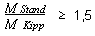

| 1 | Systemaufbau | ||
| 1.1 | Gesamtsystem | ||
| Handbetriebene Arbeitssitze bestehen aus Tragsystem und Sicherungssystem, wobei zwei Bauarten unterschieden werden: | |||
| - | Bauart A, Beispiel siehe Bild 1 der DGUV Information 201-018. | ||
| Das Auf- und Abseilgerät befindet sich oberhalb vom Höhenarbeiter. Der Arbeitssitz ist am Tragsystem aufgehängt und durch ein Sicherungssystem gegen Absturz gesichert. Der Höhenarbeiter wird durch eine Haltevorrichtung, z. B. Haltegurt, auf dem Arbeitssitz gehalten. Die Bauart A ist gleichermaßen für das Aufseilen (Einstieg unten) und für das Abseilen (Einstieg oben) vorgesehen. | |||
- |
Bauart B, Beispiel siehe Bild 3 der BGI 772. |
||
| Das Auf- und Abseilgerät befindet sich in Brusthöhe vor dem Höhenarbeiter. Der Arbeitssitz ist am Tragsystem aufgehängt. Zum Schutz vor Absturz beim Versagen des Tragsystems ist der Höhenarbeiter durch das Sicherungssystem mit einem Auffanggurt gesichert. Die Bauart B ist im allgemeinen für das Abseilen (Einstieg oben) vorgesehen, kann jedoch mit entsprechender Zusatzausrüstung auch für das Aufseilen benutzt werden. | |||
1.2 |
Tragsystem |
||
| Das Tragsystem besteht aus: | |||
| - | Aufhängung (Anschlagkonstruktion/Anschlagpunkt), | ||
| - | Verbindungselement/Verbindungsmittel, | ||
| - | Tragseil, | ||
| - | Auf- und Abseilgerät, | ||
| - | Arbeitssitz. | ||
| Tragseil, Auf- und Abseilgerät und Arbeitssitz unterliegen der Maschinenverordnung. Eine EG-Konformitätserklärung des Herstellers ist erforderlich. | |||
1.2.1 |
Aufhängung (Anschlagkonstruktion/Anschlagpunkt) |
||
| Die Bemessung ist nach den Technischen Baubestimmungen durchzuführen. Als Last ist das Doppelte der vorgesehenen Belastung, mindestens jedoch eine statische Last von 3 kN anzunehmen. | |||
| Technische Baubestimmungen sind z. B. DIN 1045, DIN 1052 und DIN 18800. | |||
| Die vorgesehene Belastung setzt sich zusammen aus dem Gewicht einer Person (100kg), der zulässigen Last aus Werkzeug und Material sowie dem Eigengewicht des Tragsystems. | |||
1.2.2 |
Verbindungselement/Verbindungsmittel zwischen Tragseil und Aufhängung |
||
| Die Mindestbruchkraft muss mindestens dem 10fachen der vorgesehenen Belastung entsprechen. Schäkel dürfen nur mit Werkzeug lösbar sein. Haken und Karabinerhaken müssen DIN EN 362 entsprechen. Verbindungsmittel müssen DIN EN 354 entsprechen. | |||
| Schäkel Form C, DIN 82101, erfüllen z. B. die vorgenannte Anforderung. | |||
| Die vorgesehene Belastung setzt sich aus dem Eigengewicht und der Nutzlast zusammen. | |||
| Als Verbindungselemente sind nur Karabiner mit arretierbarem Verschluss zulässig. | |||
1.3 |
Sicherungssystem |
||
| Das Sicherungssystem besteht aus: | |||
| - | Aufhängung (Anschlagkonstruktion/Anschlagpunkt), | ||
| - | Verbindungselement/Verbindungsmittel, | ||
| - | Auffangsystem, | ||
| Auffangsystem und Gurt als Teile von handbetriebenen Arbeitssitzen unterliegen der Maschinenverordnung. In Verbindung mit dem Tragsystem ist eine EG-Konformitätserklärung des Herstellers erforderlich. | |||
1.3.1 |
Aufhängung (Anschlagkonstruktion/Anschlagpunkt) |
||
| Die Tragfähigkeit ist entweder nach den Technischen Baubestimmungen für eine statische Einzellast von 6 kN oder durch Prüfung - zweimaliger Belastungsversuch in Benutzungsrichtung mit 7,5 kN bei einer Dauer von 5 Minuten - nachzuweisen. | |||
| Technische Baubestimmungen sind z. B. DIN 1045, DIN 1052 und DIN 18800. | |||
| Aufhängungen nach DIN EN 795 erfüllen die vorgenannten Forderungen. | |||
1.3.2 |
Verbindungselement/ Verbindungsmittel zwischen Aurfangsystem und Aufhängung |
||
| Die Mindestbruchkraft muss mindestens 15 kN betragen. Schäkel dürfen nur mit Werkzeug lösbar sein. Haken und Karabinerhaken müssen DIN EN 362 entsprechen. Verbindungsmittel müssen DIN EN 354 entsprechen. | |||
| Schäkel Form C, DIN 82101 erfüllen z. B. die vorgenannte Anforderung. | |||
| Als Verbindungselemente sind nur Karabiner mit arretierbarem Verschluss zulässig. | |||
|
2 |
Tragseil, Verbindungsmittel und Verbindungselemente |
||
| 2.1 | Die Mindestbruchkraft von Tragseilen, Verbindungsmitteln und Verbindungselementen muss mindestens dem 10fachen des zulässigen Gesamtgewichts des handbetriebenen Arbeitssitzes entsprechen. | ||
| Das Gesamtgewicht setzt sich zusammen aus Eigengewicht und Nutzlast. | |||
2.2 |
Tragseile müssen licht- und formstabilisiert sein. Natur- und Mischfaserseile sowie Chemiefaserseile aus Polyethylen sind als Tragseile nicht zulässig. |
||
| Chemiefaserseile aus Polyamid (DIN 83330), Polyester (DIN 83331) oder Polypropylen (DIN 83334) können verwendet werden. | |||
2.3 |
Bei handbetriebenen Arbeitssitzen der Bauart B gemäß Bild 3 der DGUV Information 201-018 müssen Seile nach DIN EN 1891, Form A, verwendet werden. |
||
|
3 |
Auf- und Abseilgerät |
||
| Auf- und Abseilgeräte müssen selbsthemmend sein. Sobald der Betätigungsmechanismus nicht mehr betätigt wird, muss das Gerät bei bestimmungsgemäßer Verwendung selbsttätig zum Stillstand kommen. Die Auf-bzw. Abwärtsbewegung muss mit diesem Mechanismus in ihrer Geschwindigkeit geregelt werden können. Der Widerstand gegen Durchrutschen im gehemmten Zustand muss mindestens 2,5 kN betragen. | |||
|
4 |
Arbeitssitz |
||
| 4.1 | Der Arbeitssitz muss den allgemeinen ergonomischen Anforderungen entsprechen und gewährleisten, dass der Benutzer nicht herunterrutschen kann und nicht eingezwängt wird. | ||
| Festigkeit: DIN EN 1808 (Hängende Personenaufnahmemittel) | |||
| Ergonomie: DIN V ENV 26385 (Prinzipien der Ergonomie). Eine Sitzgestaltung nach prEN 581 erfüllt z. B. die vorgenannten ergonomischen Anforderungen. | |||
| Das Herunterrutschen soll durch eine geeignete Gestaltung des Arbeitssitzes verhindert sein. | |||
4.2 |
Der Arbeitssitz muss mit einer Rückenstütze, mindestens im Lendenwirbelbereich, ausgerüstet sein. Eine höhenverstellbare Fußstütze muss angebracht werden können. |
||
4.3 |
Die Sitzfläche muss wärmeisoliert ausgeführt sein. Eine Polsterung darf auch bei teilweiser Zerstörung nicht wasseraufnehmend sein. |
||
4.4 |
Am Arbeitssitz müssen Möglichkeiten zur Befestigung von Werkzeug und Material vorhanden sein. |
||
4.5 |
Die Sitzfläche ist für das Doppelte der Nutzlast, auf einer Fläche von 35 cm Durchmesser senkrecht zur Sitzfläche wirkend, mindestens aber für 2,5 kN gegen Bruch zu bemessen. Dynamische Kräfte aus dem Betrieb und aus dem Fangfall sind zusätzlich zu berücksichtigen. |
||
| Die vorgesehene Belastung setzt sich zusammen aus dem Eigengewicht, dem Gewicht einer Person (100 kg) sowie dem Gewicht des mitgeführten Materials und Werkzeugs. | |||
4.6 |
Auf die Befestigungen der Sitzfläche sind die Anforderungen an die Tragmittel sinngemäß anzuwenden. |
||
4.7 |
Verstelleinrichtungen müssen einfach zu handhaben sein. Sie dürfen sich nicht unbeabsichtigt verstellen können und müssen gegen Durchrutschen gesichert sein. |
||
4.8 |
Handbetriebene Arbeitssitze der Bauart A gemäß Bild 1 der DGUV Information 201-018 müssen mit einer Haltevorrichtung, z.B. Haltegurt nach DIN EN 358, ausgerüstet sein. |
||
4.9 |
Alle Komponenten des Arbeitssitzes müssen so konstruiert sein, dass eine falsche Montage ausgeschlossen werden kann. |
||
4.10 |
Bewegliche Verbindungselemente müssen an Arbeitssitzen so befestigt sein, dass sie nur mit Werkzeug gelöst werden können. |
||
4.11 |
Arbeitssitze sind im statischen Belastungsversuch analog ihrer üblichen Belastungsart zu prüfen. Diese Prüfungen sollen mit dem statischen Testkoeffizienten 3 erfolgen. |
||
| Diese Belastung muss eine Stunde lang bruchfrei gehalten werden. Die Prüffläche beträgt in Anlehnung an die menschlichen anatomischen Verhältnisse 250 mm x 150 mm. | |||
|
5 |
Auffangsystem |
||
| 5.1 | Bei der Auswahl des Auffangsystems sind die aus dem abstürzenden Tragsystem herrührenden Belastungen zu berücksichtigen. | ||
5.2 |
Das Auffangsystem muss DIN EN 363 entsprechen. Die Bestandteile müssen kompatibel sein. |
||
| Auffangsysteme siehe auch BG-Regeln "Einsatz von persönlichen Schutzausrüstungen gegen Absturz" (BGR 198, bisherige ZH 1/709). | |||
| Für die Bestandteile des Auffangsystems müssen EG-Baumusterprüfungen durchgeführt sein. | |||
| Mitlaufende Auffanggeräte mit integrierter Notabseilfunktion sollen bevorzugt eingesetzt werden, da diese eine eventuelle Rettung bzw. Selbstrettung im Havariefall erleichtern. | |||
|
6 |
Auffanggurt |
||
| Bei handbetriebenen Arbeitssitzen der Bauart B gemäß Bild 3 der DGUV Information 201-018 müssen Auffanggurte DIN EN 361 entsprechen. Andere Auffanggurte dürfen nur dann eingesetzt werden, wenn durch eine EG-Baumusterprüfung die Gleichwertigkeit mit Auffanggurten nach DIN EN 361 nachgewiesen ist. | |||
|
7 |
Auslegerkonstruktionen an Brücken |
||
| Auslegerkonstruktionen als Anschlagpunkte bzw. Anschlagkonstruktionen von handbetriebenen Arbeitssitzen, die an Brücken eingesetzt werden, müssen so beschaffen sein, dass bei der vorgesehenen Belastung kein Kippmoment entsteht. Dies gilt nicht, wenn die Bauwerksgeometrie eine solche Konstruktion nicht zulässt. | |||
| Kein Kippmoment entsteht z. B. bei der Verwendung von C-förmigen Rahmen als Auslegerkonstruktion. | |||
|
8 |
Standsicherheit von Auslegerkonstruktionen |
||
8.1 |
Die Standsicherheit von Auslegerkonstruktionen als Anschlagpunkte bzw. Anschlagkonstruktionen muss gewährleistet sein. |
||
8.2 |
Die Befestigung von Gegengewichten muss so ausgebildet sein, dass diese sich auch bei einem Umkippen der Auslegerkonstruktion nicht von selbst lösen können. |
||
8.3 |
An verfahrbaren oder schwenkbaren Auslegerkonstruktionen muss eine Einrichtung vorhanden sein, mit der sie gegen unbeabsichtigte Bewegungen gesichert werden können. |
||
8.4 |
Bei gegengewichtsbelasteten Auslegerkonstruktionen muss unter den betriebsmäßig auftretenden Bedingungen das Verhältnis zwischen Standmoment und Kippmoment mindestens 1,5 sein.  |
||
| 8.5 | Beim Fangen durch das Sicherungssystem können kurzzeitig zusätzliche, kippend wirkende Kräfte auftreten. Die Standsicherheit ist unzureichend, wenn der Massenschwerpunkt der Auslegerkonstruktion über die Kippkante hinaus bewegt wird. Die wirklichen Vorgänge können meistens durch eine quasi statische Berechnung und eine Energiebilanzbetrachtung nur unzureichend beschrieben werden. Es sind darum praxisgerechte Fangversuche durchzuführen. | ||
8.6 |
Die tatsächliche Sicherheit gegen Umkippen einer Auslegerkonstruktion ergibt sich aus dem Verhältnis zwischen derjenigen Versuchsbelastung, bei der gerade eben ein Umkippen auftritt, und der betriebsmäßigen Belastung. Die Versuchsreihe kann abgebrochen werden, wenn dieses Verhältnis mindestens 1,5 beträgt. |
||
8.7 |
Zur Berücksichtigung von Windkräften ist die tatsächlich getroffene Fläche, sowohl der Auslegerkonstruktion als auch des Arbeitssitzes einschließlich Höhenarbeiter mit Material und Werkzeug, mit einer Windlast von 0,1 kN/m2 zu belegen. |
||
8.8 |
Für Auslegerkonstruktionen in Ruhestellung ist der Lastfall "Abtreiben durch Wind" mit den Windlasten gemäß DIN 1055 nachzuweisen. |
||
|
9 |
Bemessung von Auslegerkonstruktionen |
||
| 9.1 | Die Festigkeit von Auslegerkonstruktionen als Anschlagpunkte bzw. Anschlagkonstruktionen muss nachgewiesen werden. | ||
9.2 |
Unter den betriebsmäßig auftretenden Beanspruchungen dürfen die den Normen "Stahlbauten" beziehungsweise "Aluminiumkonstruktionen" zu entnehmenden zulässigen Spannungen nicht überschritten werden. |
||
9.3 |
Es ist nachzuweisen, dass während des Fangvorgangs an tragenden Teilen der Auslegerkonstruktion die Fließgrenze nicht erreicht wird. |
||
| Abhängig von der jeweiligen Konstruktion, kann während des Fangens durch das Sicherungssystem kurzfristig ein Mehrfaches der ruhenden Belastung auftreten. | |||